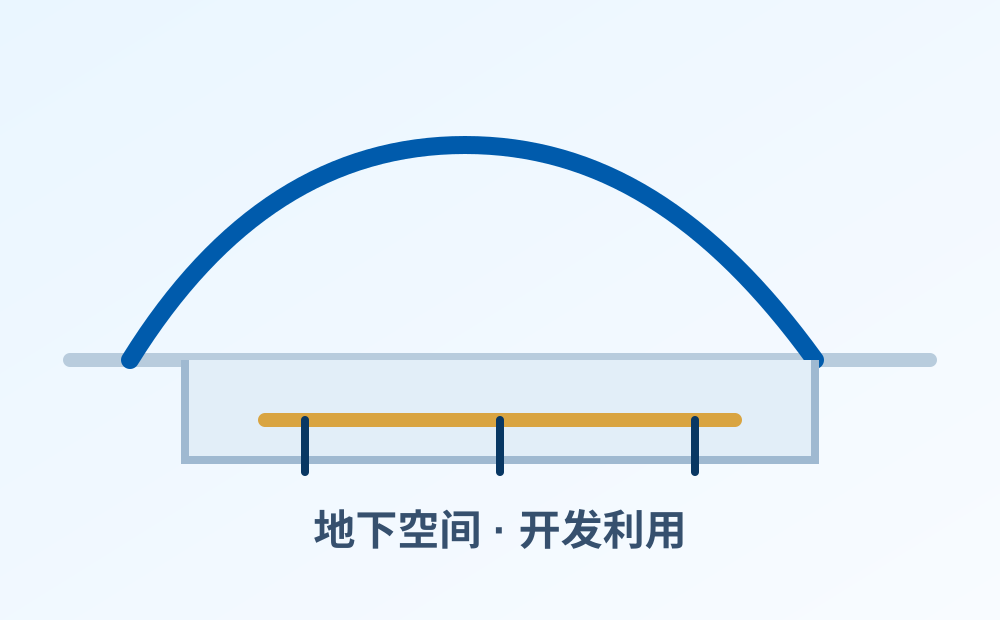

姬建
研究方向岩土工程风险分析与可靠性控制（可替换为具体方向）
01 / Research Team
下方为可手动横向滚动的成员展示栏。每张卡片均预留成员照片和研究方向位置，可直接在 index.html 中替换姓名、照片路径与具体方向。
岩土工程风险分析与可靠性控制（可替换为具体方向）
边坡工程与滑坡预测预警（可替换为具体方向）
地下空间开发利用（可替换为具体方向）
岩土灾害韧性防控理论（可替换为具体方向）
岩土工程风险分析与可靠性控制（可替换为具体方向）
边坡工程与滑坡预测预警（可替换为具体方向）
地下空间开发利用（可替换为具体方向）
岩土灾害韧性防控理论（可替换为具体方向）
岩土工程风险分析与可靠性控制（可替换为具体方向）
边坡工程与滑坡预测预警（可替换为具体方向）
地下空间开发利用（可替换为具体方向）
岩土灾害韧性防控理论（可替换为具体方向）
岩土工程风险分析与可靠性控制（可替换为具体方向）
边坡工程与滑坡预测预警（可替换为具体方向）
地下空间开发利用（可替换为具体方向）
岩土灾害韧性防控理论（可替换为具体方向）
岩土工程风险分析与可靠性控制（可替换为具体方向）
边坡工程与滑坡预测预警（可替换为具体方向）
地下空间开发利用（可替换为具体方向）
02 / Research Directions
研究方向同样设置为可手动横向滚动的一栏，并为每个方向预留图片位置。将占位图替换为真实工程现场、实验照片、图表或成果图即可。

围绕岩土工程系统不确定性、失效概率、可靠性指标、风险传递与控制决策，建立面向工程安全的风险分析方法体系。

面向边坡稳定、滑坡孕灾机理、监测数据融合、变形趋势识别与临灾预警，服务重大工程和自然边坡风险防控。

关注城市地下空间、隧道与地下结构建设中的围岩稳定、施工风险、长期服役安全和韧性运行维护问题。

研究灾害冲击下岩土系统的承灾、恢复与适应能力，发展面向多灾种耦合和全生命周期治理的韧性防控理论。
03 / News & Publications
该部分预留团队新闻、论文、项目和获奖信息，后续可扩展为单独的新闻列表页和成果列表页。
新版网站已按照科研团队、研究方向、联系方式和动态成果结构进行重做。
可在此发布新生入组、学术交流、会议报告、工程调研等动态。
可放置会议邀请、合作研究、课题进展或野外调查信息。
作者、期刊、DOI、PDF、代码或数据链接待补充。
项目来源、负责人、起止时间和工程应用情况待补充。
可展示论文、专利、软件著作权、标准规范或获奖成果。
04 / Contact
欢迎围绕岩土工程风险、边坡灾害、地下空间和韧性防控方向开展学术交流、项目合作与学生培养合作。
江苏省南京市 · 河海大学 · 土木与交通学院
河海大学、土木与交通学院、相关实验室主页或合作单位链接可放置于此。